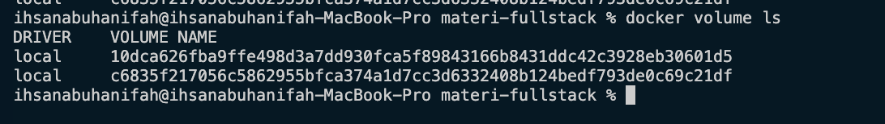
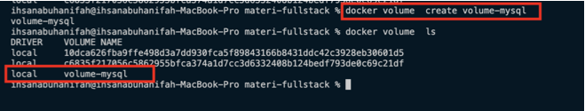
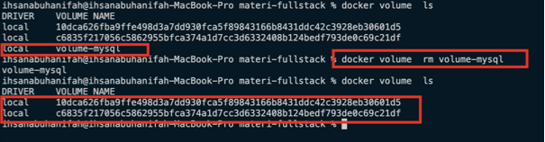
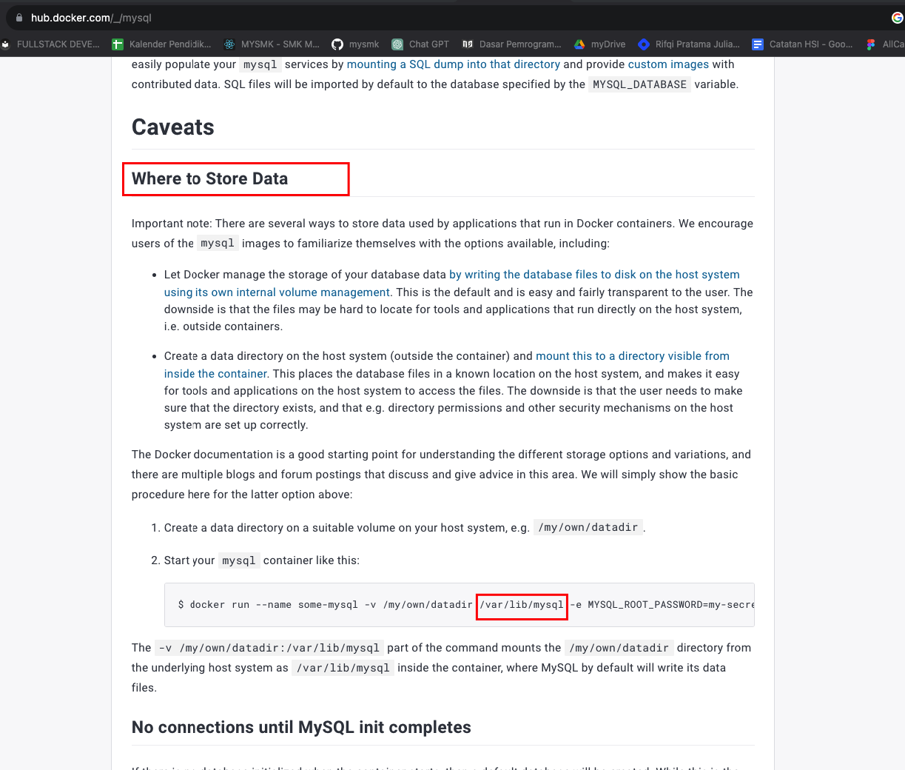
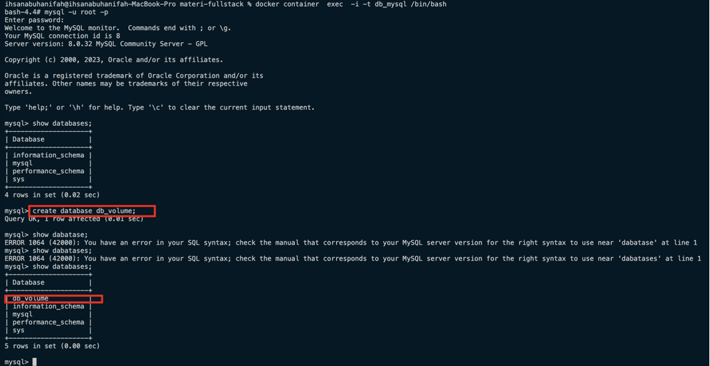

A. Docker Fundamental
1. Apa itu Container
Container merupakan suatu instance yang berjalan dari suatu image, yang merupakan paket berisi code aplikasi, runtime, library, konfigurasi, dan dependensi lainnya. Kontainer ini menggunakan fitur-fitur seperti kernel namespaces dan cgroups di sistem operasi Linux untuk memberikan isolasi yang kuat, memungkinkan aplikasi beroperasi terisolasi dari environment lainnya pada host. Container dapat dijalankan, dihentikan, dan dikelola dengan Docker API atau Command Line Interface (CLI), dan dapat dipindahkan dengan mudah di antara komputer, mesin virtual, atau cloud. Keunggulan utama container adalah portabilitas lintas platform, kemudahan manajemen, dan isolasi yang efisien.
2. Apa itu Docker
- Docker merupakan salah satu dari implementasi
Container Manageryang paling populer saaat - Docker merupakan aplikasi yagn free dan Open Source sehingga bisa kita gunakan secara bebas
- Docker adalah sebuah cara untuk package, deploy, distribusi app secara konsisten di environment manapun.
3. Instalasi Docker
Docker Dekstop
Untuk menjalankan docker pada komputer kita, silahkan terlebih dahulu mendownload Docker Desktop link di bawah dan lakukan proses instalasi.
https://docs.docker.com/get-docker/
Setelah proses instali silahkan jalankan docker dekstop pada komputer kita.
Pada gaambar di atas terlihat jika docker sudah berjalan pada komputer kita ditandai dengan status
Docker Dekstop is running. Kemudian kita pilih Preferences untuk mengatur resource yang akan digunakan oleh Docker Dekstop seperti pada gambar di bawah ini.
Silahkan atur sesuai dengan kebutuhan resource dari Docker Dekstop.
Docker Version
4. Docker Registry
Docker Registry adalah tempat penyimpanan yang digunakan untuk menyimpan dan mendistribusikan image Docker. Image Docker adalah paket yang berisi semua komponen yang diperlukan untuk menjalankan suatu aplikasi, termasuk kode, runtime, perpustakaan, konfigurasi, dan lainnya.
Docker Registry menyediakan layanan untuk mengelola, menyimpan, dan mengambil image Docker. Ketika Anda membuat image Docker, Anda dapat menyimpannya di Docker Registry agar dapat diakses dan digunakan oleh orang lain atau oleh sistem lainnya. Registry ini berperan penting dalam proses pengembangan perangkat lunak dan pengelolaan kontainer, terutama ketika ingin berbagi atau mendistribusikan image Docker di antara beberapa lingkungan atau mesin.
Beberapa contoh Docker Registry yang umum digunakan :
- Docker Hub (yang merupakan registry publik yang dapat diakses oleh semua orang) : https://hub.docker.com/,
- Google Container Registry : https://cloud.google.com/container-registry,
- Amazon Elastic Container Registry (ECR) : https://aws.amazon.com/id/ecr
- Digital Ocean Container Registry : https://www.digitalocean.com/product/container-registry.
Pada materi ini kita akan focus untuk menggukaan docker hub karena masih banyak image yg gratis.
Silahkan buat akun di docker hub pada halaman dockerhub https://hub.docker.com/.
5. Docker Image
Apa itu Docker Image
Docker image mirip seperti installer aplikasi dimana di dalam docker image berisi semua komponen yang diperlukan untuk menjalankan suatu aplikasi dalam suatu docker container.
untuk melihat image yang ada pada docker, kita bisa menggunakan perintah docker image ls
Download Docker Image
untuk mendownload Docker image dari Docker Registry pada Docker Hub, kita bisa menggunakan perintah : docker image pull namaimage:tag
Pada contoh ini, kita akan mendownload docker image dari redis dari docker hub
Catatan
- Pada bagian
tagsesuaikan dengan kebutuhan dan versi yang diinginkan - Pada contoh di atas , kita mengdownload tag lates
Menghapus Docker Image
Pada contoh ini kita akan menghapus docker image dengan image id e9db8e342ece
6. Docker Container
- Satu Docker image bida digunakan untuk membuat beberapa
Docker Containerasalkan namaDocker Containernya berbeda. - Jika kita sudah membuat docker container, maka Docker image yang digunakan tidak bisa dihapus, hal ini dikarenakan sebenarnya Docker Container tidak meng-copy isi
Docker Image, tapi hanya menggunakan isinya saja. - Saat membuat container, secara default container tersebut tidak akan berjalan
- Container harus dijalakan secara manual
Melihat Docker Container pada Docker
Melihat semua Container
Melihat semua Container yang berjalan
!!!Catatan - docker container ls -a digunakan untuk menampilkan semua docker container yang ada - docker container ls digunakan untuk menampilkan docker container yang berjalan
Membuat Docker Container
Setelah kita mendownload image redis dari docker hub, selanjutnya kita akan membuat docker container untuk redis menggunakan image tersebut. Untuk membuat docker container kita tinggal menjalan perinta docker container create --name nama
_container nama_image:tag_dari_image
!!!Catatan - Ketika pertama kali dibuat, docker container tidak langsung berjalan, makanya tidak ada di list ketika menjalankan docker container ls
Menjalakan Docker Container
Docker container tidak langsung berjalan ketika pertama kali dibuat, maka dari itu kita harus menjalankan docker container terlebih dahulu dengan perintah di bawah.
docker container start contohredis
!!! Catatan - port yang digunakan adalah port dari container bukan port dari sistem operasi, maka port yang digunakan tidak akan bentrok dengan aplkasi lain.
Menghentikan Docker Container
Untuk menghentikan container kita dapat mengguankan perinta berikut.
Menghapus Container
Untuk menghapus container kita dapat mengguankan perinta berikut.
7. Docker Container Exec
- Saat kita membuat container, aplikasi yang terdapat di dalam container hanya bisa diakses dari dalam container
- untuk masuk ke dalam container, kita bisa menggunakan fitur
Container Exec, dimana dengan fitur ini kita bisa masuk kedalam docker container dan bisa menjalankan aplikasi yang da di dalamnya. - untuk masuk ke dalam container, kita bisa mencoba mengeksekusi program
bash scriptyang terdapat di dalam container dengan bantuanContainer exec iadalah argument interaktif, menjaga input tetap aktiftadalah argument untuk alokasi pseudo-TTY (terminal akses)- dan /bin/bash contoh kode program yang terdapat di dalam container
Pada contoh di bawah ini, kita akan mencoba masuk kedalam RDBMS mysql yang ada pada docker container menggukan container exec.
Terlihat pada gambar di atas , ketika sudah masuk ke dalam docker container, kita bisa menampilkan daftar database yang ada mysql yang berjalan di docker container. Dengan fitur ini kita bisa mengoperasikan mysql seperti hal yang sering kita lakukan ketika mysql di install di komputer kita.
8. Docker Container Environment Variabel
Docker environment variables adalah environment variabel yang digunakan untuk mengkonfigurasi aplikasi atau layanan yang berjalan di dalam Docker Container. Variabel-variabel ini membantu mengatur berbagai aspek aplikasi, termasuk setting, koneksi database,API key, dan banyak lagi. Penggunaan environment variables memberikan fleksibilitas dalam mengonfigurasi aplikasi di dalam kontainer tanpa perlu mengubah kode.
Pada contoh ini kita akan membuat mysql pada docker container, yang mana ketika membuat mysql kita perlu untuk membuat password root. Password root ini yang akan kita set terlebih dahulu pada Docker environment variables.
Silahlkan download terlebih dahulu image mysql jika belum ada pada docker image.
kemudian kita akan membuat docker container dengan memasukan Docker environment variables. untuk membuat docker container dari image mysql terdapat default environment variables yang bisa kita gunakan yaitu MYSQL_ROOT_PASSWORD yang merupakan env untuk menentukan password root dari mysql pada docker container.
untuk menambahkan env kita cukup menambahkan --env NAMA_ENV=nilai_env ketika membuat docker container.
docker container create --name nama_container --env NAMA_ENV1=nilai_env1 --env NAMA_ENV2=nilai env2 nama_image:tag_image
Berikut contoh membuat docker container dengan Docker environment variables
- kita membuat docker container dengan env MYSQL_ROOT_PASSWORD = ihsan
- paswword ini yg kita input ketika ingin mengakses mysql.
!!! Keterangan - Docker environment variables bisa lebih dari satu tergantung dengan kebutuhan dari aplikasi yang kita buat.
9. Docker Container Port
Docker container yang kita buat dapat kita akses melalui Docker Exec seperti pada contoh sebelumnya. Namun apabila kita ingin menakses aplikasi dalam docker container dari komputer host maka hal itu tidak bisa kita lakukan. Kenapa? karena port yang berjalan adalah port yg terisolet di dalam container itu sendiri seperti pada contoh gambar di bawah.
Port default dari mysql adalah 3306, namun ketika kita ingin mengkases mysql dengan komputer kita maka akan gagal karena pada komputer kita tidak ada mysql yg berjalan pada port 3306. Docker container membuat port yang digunakan terisolasi dari komputer host, hal ini memberikan keuntungan kepada kita aplikasi yang berjalan pada port tertentu tidak akan konflik dengan aplikasi lain yg berjalan pada komputer host. Pertanyaannya sekrang bagaimana jika komputer host ingin mengakses aplikasi yg ada pada docker container, jawabanya dengan PORT FORWADING.
PORT FORWADING
- Port Forwading akan menerusakan port yang terdapat pada sistem ke dalam port aplikasi pada docker container
-p port_host:port_containeratau--publish port_host:port_containermerupakan perintah untuk membuat port forwading pda docker container- port forwading bisa lebih dari satu.
Pada contoh di bawah kita akan membuat port forwading pada mysql di docker container. kita hapus terlebih dahulu container contohmysql, dan kita akan buat kembali dengan menambahkan port forwading.
docker container create --publish 9000:3306 --name nama_container --env NAMA_ENV1=nilai_env1 --env NAMA_ENV2=nilai env2 nama_image:tag_image
Terlihat pada contoh di atas, komputer host sudah bisa mengakses aplikasi mysql di docker container menggunakan port 9000.
10. Docker Container Stats
Saat menjalankan docker container tentunya akan menggunakan resource seperti CPU, Memory dan lain-lain. Namanu pertanyaannya bagaimana kita melihat statistik dari pengguankan resource pada docker. Docker sudah menyediakan perintah untuk melihat penggunakan resource dari setiap container yang berjalan.
12. Docker Volume
Docker volume adalah cara untuk menyimpan dan mengelola data persisten di dalam Docker Container. Docker Container sendiri pada umumnya bersifat stateless, yang berarti setiap kali kontainer dimatikan atau dihapus, semua perubahan pada sistem file di dalamnya akan hilang. Docker volume memungkinkan kita menyimpan data di luar kontainer, sehingga data tersebut dapat dipertahankan bahkan jika kontainer dihapus atau dihentikan.
Beberapa karakteristik Docker volume termasuk:
-
Persistensi Data: Docker volume memungkinkan data untuk bertahan dan tidak hilang ketika kontainer dihapus atau dihentikan. Ini sangat berguna untuk menyimpan data aplikasi, basis data, atau konfigurasi yang perlu dipertahankan di antara siklus hidup kontainer.
-
Kemudahan Penggunaan: Docker menyediakan perintah dan API untuk membuat, mengelola, dan menggunakan volume dengan mudah. Anda dapat membuat volume saat menjalankan kontainer atau secara terpisah menggunakan perintah docker volume.
-
Berbagi Data Antar Kontainer: Anda dapat menggunakan volume untuk berbagi data antar kontainer. Dengan mengaitkan volume yang sama ke beberapa kontainer, mereka dapat berkomunikasi dan berbagi data melalui volume tersebut.
Melihat Docker Volume

Membuat Volume
Menghapus Vokume
Volumen Container
Saat kita sudah membuat volume , maka kita sudah bisa menggunakan volume tersebut di dalam container. Hal ini memberikan keuntungan dengan menggunakan volume maka jika container di hapus maka data akan tetap aman. Data yang berada di dalam volume dapat digunakan oleh container lain. Untuk membuat volume kita bisa menambahkan perintah `--mount "type=volume, source=nama_volume distination="data_a"
Pada contoh ini kita akan membuat mysql yang datanya akan disimpan di dalam docker volume

untuk distination
docker container create --name nama_container --mount "type=volume, source=nama_volume distination=tempat_penyimpanan di aplikasi"
docker container create --name db_mysql --mount "type=volume,source=mysql-volume,destination=/var/lib/mysql" -e MYSQL_ROOT_PASSWORD=ihsan --publish 9000:3306 mysql:8.0
docker container create --name db_mysql2 --mount "type=volume,source=mysql-volume,destination=/var/lib/mysql" -e MYSQL_ROOT_PASSWORD=ihsan --publish 9001:3306 mysql:8.0
Membuat container db_mysql dengan volume

Membuat database 
**Menbuat container db_mysql2